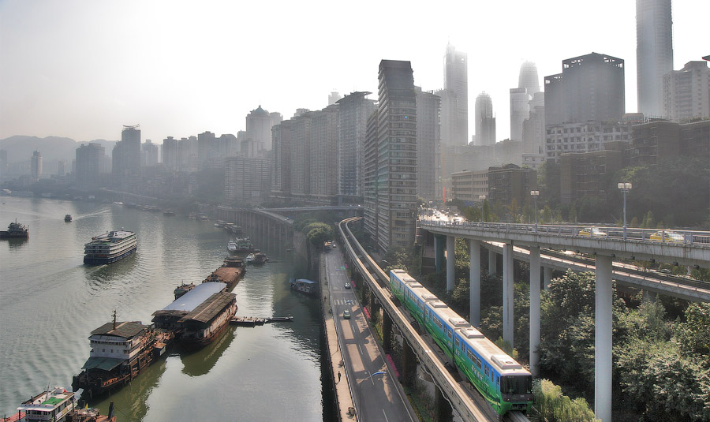

Chongqing has the fourth largest city in China, with a population of
16 million people. It is one of the top 50 cities in the world based
on airport traffic, scholarly output, and GDP. The city has a bright
future, considerd by China to be a "gateway to the West", and a key
location in the Belt and Road Initiative. But, until 2005, the
Chongqing had virtually no mass transpotation of any kind.

Chongqing is a city of steep hills and narrow river valleys. In each
direction, the city is borderd by a major major mountain range (Daba,
Wu, Wuling, and Dalou). This is the area of the famous Three Gorges,
where the Yangtze River has cut through entire mountains through
thousands of years of geography. The area also features dense
sub-tropical forests and natural limestone caves. Although Chongqing
has developed significantly in the 1990s, the challenging gepgrahy had
prevented the construction of any metro system or railway, such as
those that exist in most other Chinese cities.
Chongqing Rail Transit System
In 2005, the Chongqing Rail Transit (CRT) system opened. This was the
6th documented attempt to create a metro, tram, or rail system for the
city. The transportation network was uniquely designed to meet the
challenges of the terrain. Two of the ten lines are monorails, a type
of train which is better able to handle slopes and tight curves. The
monorail portion of the system was the largest monorail in the world
at the time of opening.